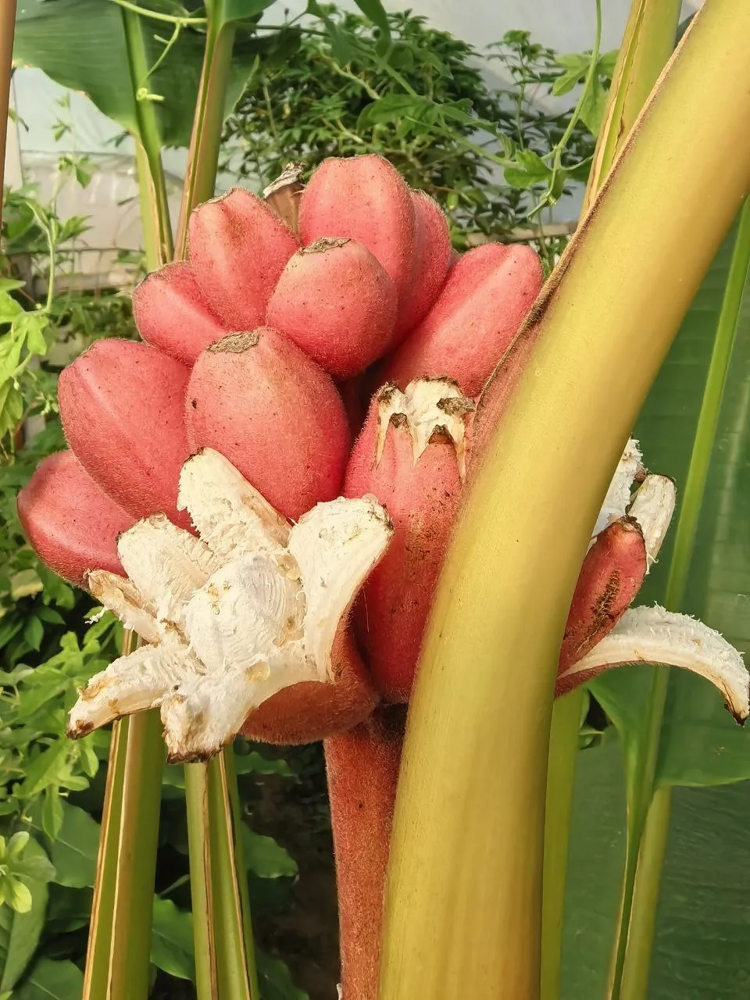
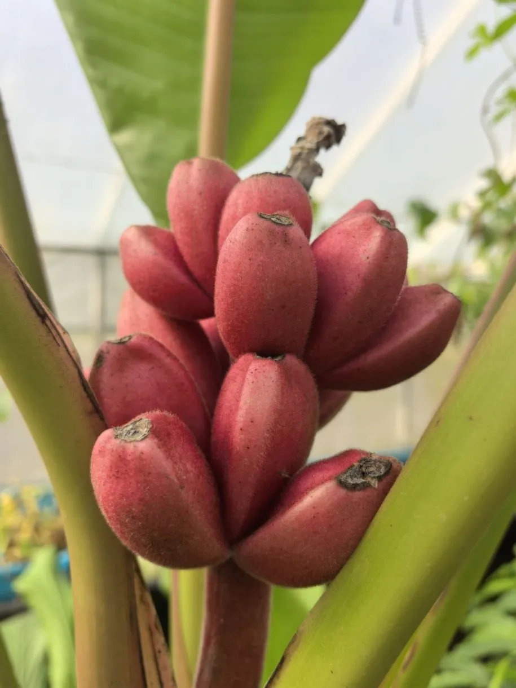
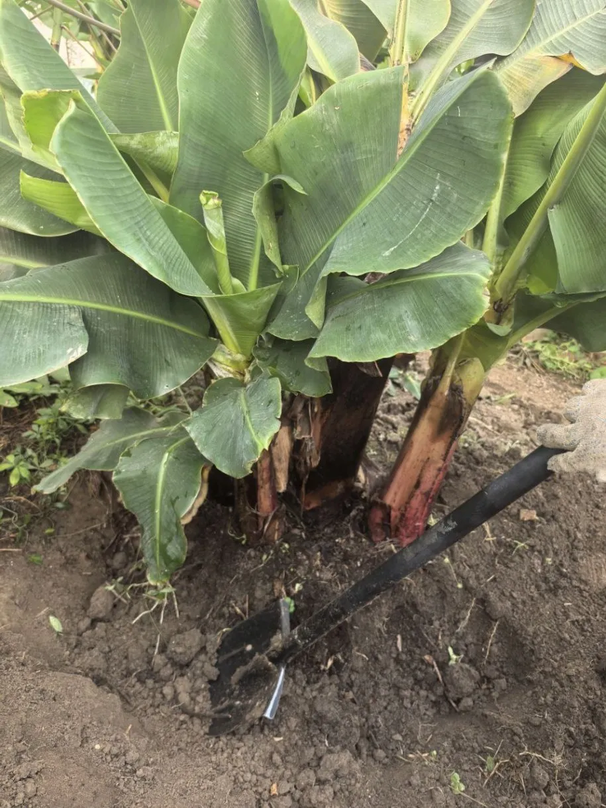
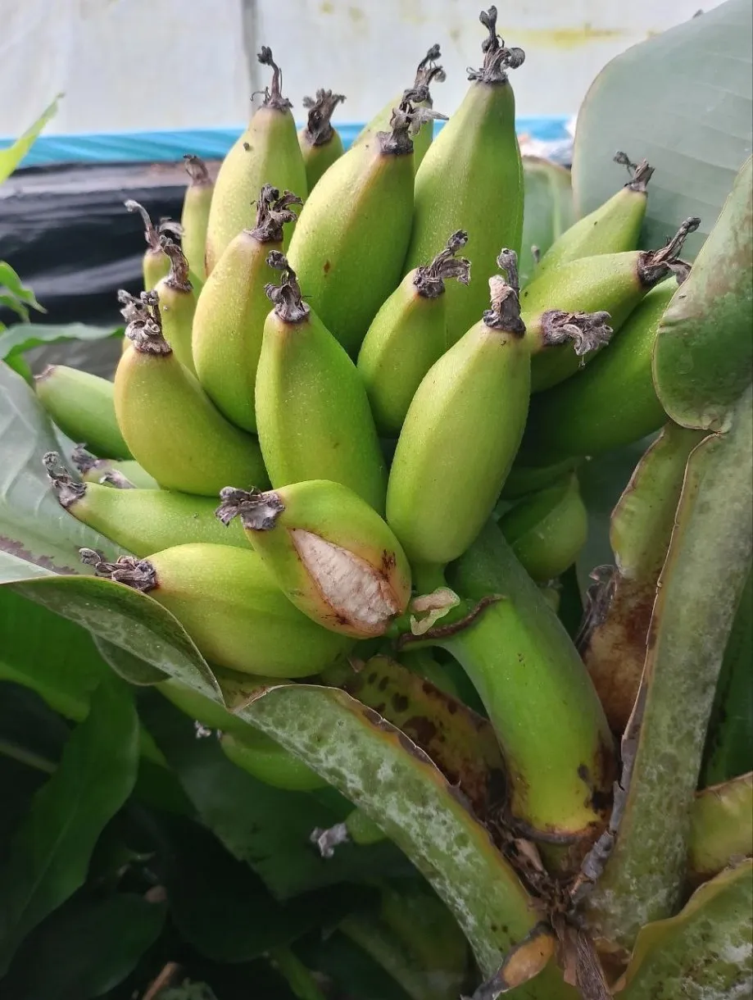
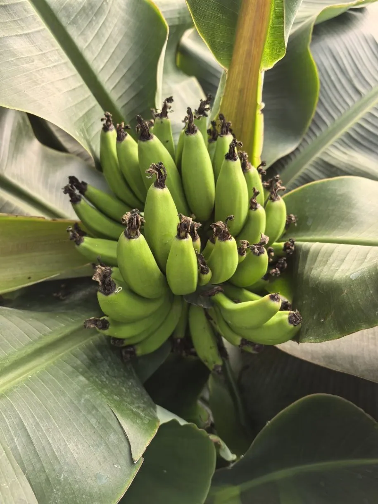
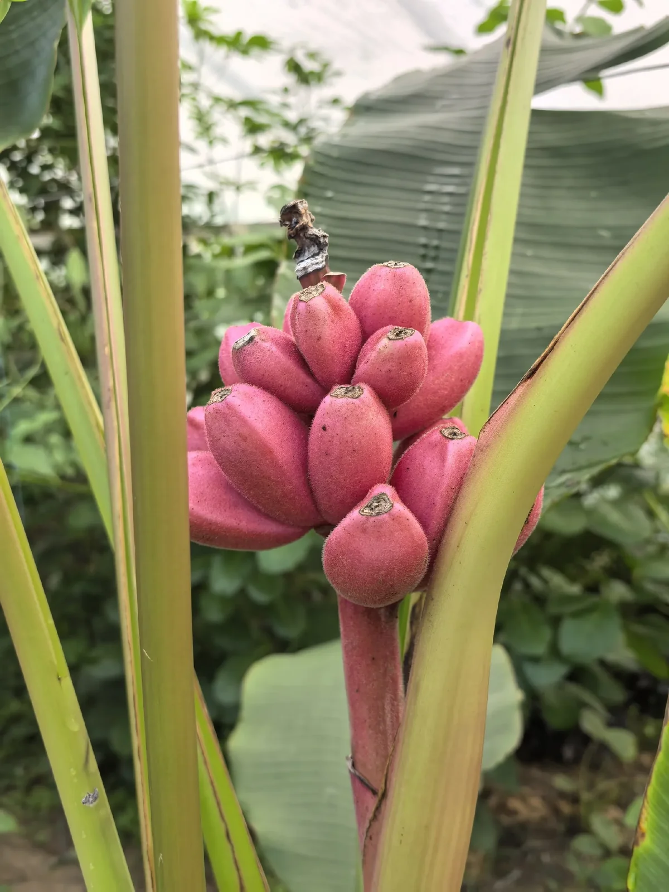
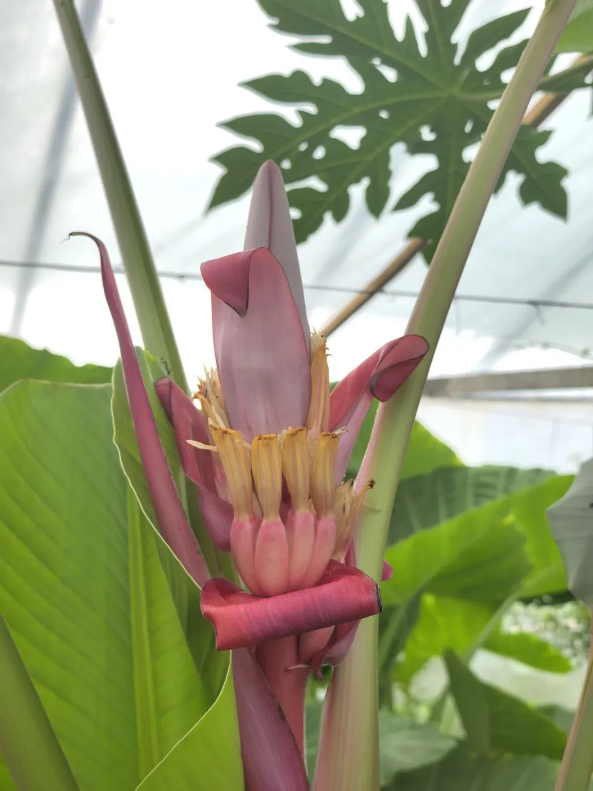
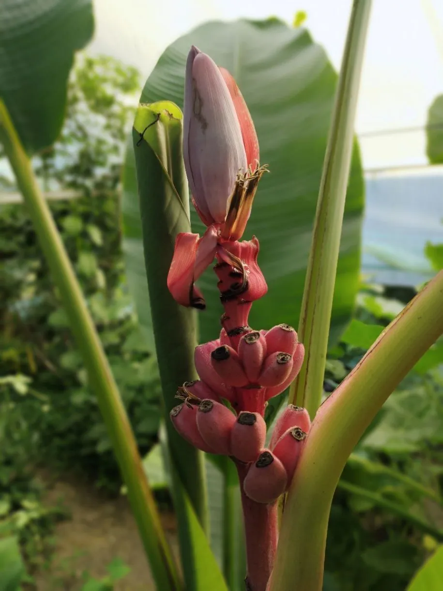

Тропическое травянистое растение со сладкими плодами. Реальный опыт выращивания бананов в теплице в условиях России с получением урожая.
Преимущества культуры для вашего участка.
Каждый сорт уникален — от формы до вкуса.
Бананы в разные сезоны: от всходов до сбора урожая.








Всё, что нужно знать о культуре: от посадки до хранения.
Опыт питомника Batatchudo доказал — вырастить бананы в России реально, но требуется создать подходящие условия и запастись терпением.
Да, это реально! Питомник Batatchudo получил первый урожай бананов сорта Киевский Карлик в отапливаемой теплице. Плоды созрели за 6–7 месяцев после цветения.
Лучше всего зарекомендовал себя Киевский Карлик — компактный и урожайный. Также подходит Бархатный Розовый — декоративный сорт для горшечного выращивания.
Основные требования: тепло, свет и влага. Летом достаточно полива и душа. Зимой требуется отапливаемая теплица. При должном уходе банан обязательно порадует урожаем.
Посадочный материал из коллекции Batatchudo и рекомендации по выращиванию.